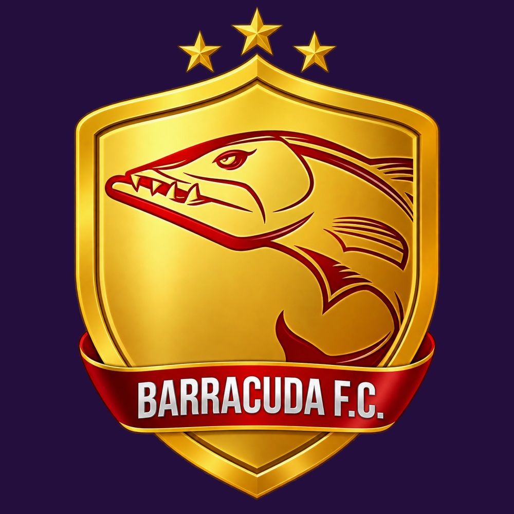
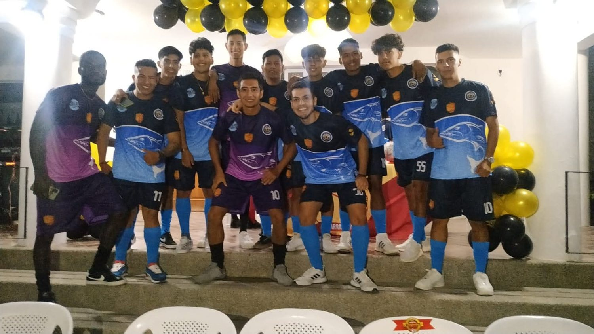
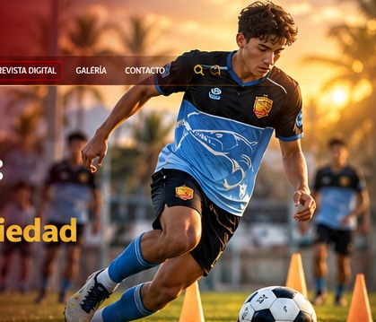
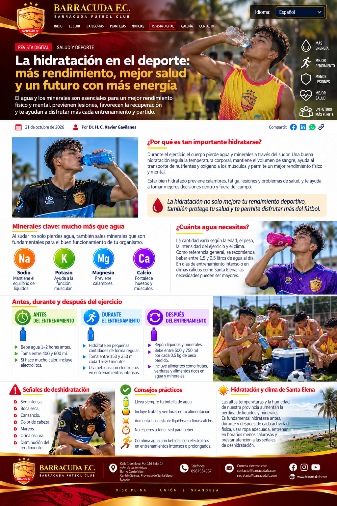

¡Lleva nuestra pasión contigo!
Cada camiseta, cada símbolo y cada detalle cuentan una historia de esfuerzo, unión y amor por Barracuda F.C. Muy pronto podrás llevar nuestros colores contigo.
Más que productos, recuerdos y sueños que nos unen.
BARRACUDA F.C.SALINAS · ECUADORDesde Salinas impulsamos el deporte, la formación y las oportunidades para las nuevas generaciones.
Hay sueños que se llevan en el corazón. Te invitamos a ser parte de los próximos capítulos de nuestra historia.
Cada camiseta, cada símbolo y cada detalle cuentan una historia de esfuerzo, unión y amor por Barracuda F.C. Muy pronto podrás llevar nuestros colores contigo.
Más que productos, recuerdos y sueños que nos unen.Creemos que cada niño, joven y deportista lleva dentro un talento y un sueño por descubrir. Nuestra academia nace para compartir conocimientos, fortalecer valores y abrir oportunidades dentro y fuera de la cancha.
Nuestro mayor triunfo es ayudarte a construir tu futuro.Conoce los 18 diseños propuestos para nuestro décimo aniversario y selecciona tus favoritos. La votación oficial aún no está habilitada.
Ver uniformes y elegir favoritos →Las elecciones son una vista previa; todavía no se registran votos oficiales. Las compras e inscripciones aún no están habilitadas.
El Club Profesional Barracuda F.C. nació en Salinas el 29 de abril de 2017, con una visión que une el fútbol competitivo y la formación humana.
Somos una entidad deportiva privada sin fines de lucro, con personería jurídica otorgada mediante el Acuerdo N.º 0035 de 2021. Promovemos la disciplina, el respeto, la inclusión, el trabajo en equipo y las oportunidades para niños, niñas y jóvenes.
Directorio registrado para el período 2 de febrero de 2025 – 1 de febrero de 2029.
Xavier Andrés Gavilanes Robinson
Valentín Josué Ávila Robinson
Juan Xavier Gavilanes Robinson
Jorge Hamilton Lindao Figueroa
Jorge Eduardo Mosquera Guerrero
Michelle Sofía Oleas Sánchez
Un proyecto de desarrollo integral que proyecta combinar deporte, educación, salud y oportunidades para la juventud de Santa Elena.
Canchas de entrenamiento, estadio y espacios para el desarrollo del talento.
Aulas, biblioteca, tecnología y acompañamiento educativo.
Atención médica y psicológica, gimnasio, residencia y comedor.
Crecimiento por etapas y evaluación de tecnologías energéticas eficientes.
La propuesta contempla un terreno desde 8 hectáreas, un estadio inicial de 3.000 a 5.000 espectadores y expansión futura sujeta a estudios. El presupuesto base referencial es USD 22,64 millones en cinco etapas; no representa obras ejecutadas ni financiamiento asegurado.



Estamos preparando una colección de fotografías auténticas de nuestra historia, equipos, partidos y actividades.
Las imágenes oficiales se incorporarán progresivamente; no se utilizan fotografías de otros clubes.
Calle 1 de Mayo, Mz. 116, Solar 14 y Av. de las Américas, barrio Carbo Viteri, Salinas, Santa Elena, Ecuador.
Atención e información general: contacto@barracudafc.com
Secretaría institucional: secretaria@barracudafc.com